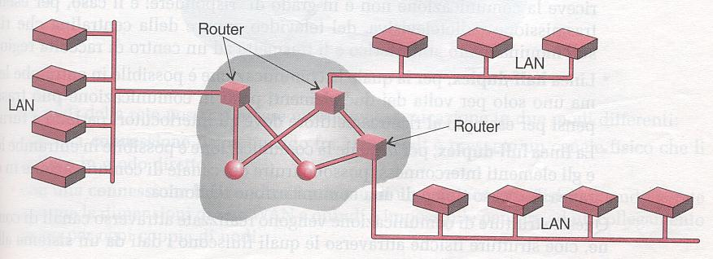

| Tipologie Di Reti |
Reti locali LAN (Local Area Network)
Sono piccole reti di tipo aziendale destinate a collegare al massimo alcune decine di postazioni, dislocate su un territorio comprendente uno o più edifici.
In genere consentono la comunicazione tra computer in diversi uffici locali, permettendone la condivisione di software (programmi e archivi dati) e periferiche hardware (scanner o stampante).
Le caratteristiche principali delle LAN sono la semplicità realizzativa, il basso tenore di errore o guasto e l'alta velocità di trasmissione che può arrivare fino a 100 Mbps.
* Reti metropolitane MAN (Metropolitan Area Network)
Si tratta di estensioni delle reti locali in ambito urbano.
Vengono in genere realizzate nelle città cablate con dorsali in fibre ottiche, che mettono a disposizione dei cittadini servizi di tipo comunale.
Le prestazioni sono estremamente veloci, arrivando fino alla trasmissione di 140 Mbps.
Tuttavia questa classificazione non sempre è condivisa, inserendosi le MAN di solito nel contesto più ampio delle WAN.
* Reti geografiche WAN (Wide Area Network)
L'estensione di queste reti è geograficamente variabile da una città all'intero pianeta.
Si possono pertanto avere reti nazionali e internazionali che utilizzano per le connessioni le infrastrutture già esistenti nell'ambito delle telecomunicazioni, e più in particolare quelle gestite dall'operatore telefonico nazionale.
La velocità di trasmissione dei dati è naturalmente legata alla tecnologia utilizzata per le diverse connessioni: si può andare dalle dorsali in fibre ottiche, ai ponti radio per i collegamenti via etere, al classico doppino telefonico che costituisce la linea prevalentemente esistente in ambito urbano.
Occorre poi distinguere tra i diversi sistemi di trasmissioni che si utilizzano e che sono variabili tra il tipico collegamento analogico, in cui si sfrutta il canale ad uso telefonico già esistente, quello digitale a doppio canale denominato ISDN, per finire con il nuovo sistema veloce ADSL (appartenente alla categoria ATM) che attualmente consente comunicazioni su doppino telefonico fino a 600 Kbps e su cavi ottici fino a 10 Mbps.
La rete WAN si compone di tante sottoreti LAN interconnesse tra loro attraverso apparecchi chiamati Router
|
 |